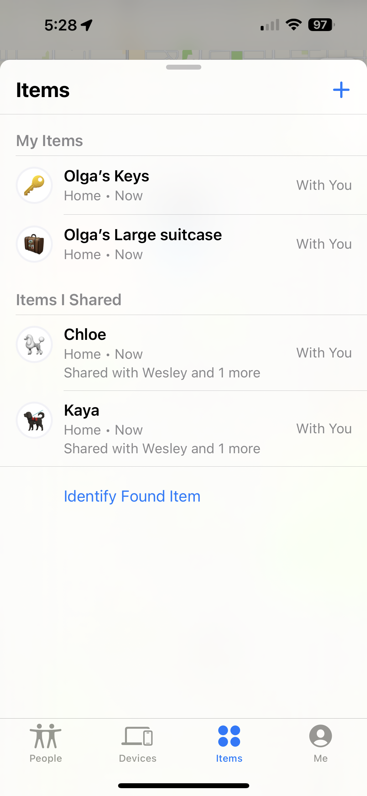

June 20024
WWDC news
Yesterday, Apple held its annual WWDC Keynote address posted on Apple's website. The Keynote is 2 hours long. It is chapterized.
Overall, there are a lot of new features being introduced in all the platforms. Notably, many of them are more sophisticated versions of 3rd party apps, all integrated into the Apple ecosystem with more privacy and laying the foundation for further growth over time.
Here is Apple's 2.5-minute video summary, `18 Things from WWDC24':`
The new Apple Intelligence (AI), an overview by Apple:
Apple's Newsroom press release about AI, `the personal intelligence system'.
Apple emphasized privacy features with Apple Intelligence:
First impressions and summary by WSJ's Joanna Stern:
A brief interview with Joanna Stern:
Apple unveiled its generative AI strategy called Apple Intelligence, with plans for it to be integrated into all devices. @JoannaStern breaks down the plans and why Elon Musk threatened to sue the company. pic.twitter.com/g6D2CzEbat
— Squawk Box (@SquawkCNBC) June 11, 2024
More details from Apple about their AI:
This is from Apple's State of the Union
— Max Weinbach (@MaxWinebach) June 10, 2024
The local model is a 3B parameter SLM that uses adapters trained for each specific feature. Diffusion model does the same thing, adapter for each style.
Anything running locally or Apple's Secure Cloud is an Apple model, not OpenAI. pic.twitter.com/BRkWAQQCQI
Here is a slightly longer summary of Apple's announcements by MacRumors, broken into short chapters, starting with,
`Apple Intelligence' (or AI):
Siri major updates:
iOS 18 and iPadOS 18 features:
Here is a list & recap of all the announcements, with links to details for each new feature.
Also, macOS updates and features:
visionOS is also getting updates:
WatchOS 11 new features:
and tvOS new features:
Also, iOS 18 will introduce Tap to Cash, to let you pay someone cash via your iPhone without text or email or anything else, just tap your iPhones with each other.
Basic summary of Apple Intelligence so far: On-device large language and diffusion models that deliver helpful features across iPhone and other devices with on-device symantic index that can bring in information across your devices and apps
— Marques Brownlee (@MKBHD) June 10, 2024
Private cloud compute allows it to…
Apple's AI Moment Arrives: John Gruber comments on Casey Newton's first reactions to Apple's AI integration.
A nice detail in iOS 18:
design details in iOS 18 – display bezels expand to indicate when a button is being pressed pic.twitter.com/3VHGpsrfs4
— Greg Sarafian (@GregSarafian) June 10, 2024
Some new iOS 18 Features
— Marques Brownlee (@MKBHD) June 10, 2024
- The ability to put icons anywhere on the homescreen grid
- Theme engine to add a single tint color to all icons and widgets
- Redesigned control center with multiple pages and third party app support
- You can finally change the flashlight and camera…
All the startups Apple killed today 🧵#WWDC
— Sumit Kumar (@TweetsOfSumit) June 10, 2024
other news
Now, beyond WWDC announcements... Marques Brownlee visited Apple's iPhone test labs, `Where 10,000 iPhones are built and destroyed before the first one ships'. Take a look:
Last month, Apple introduced the new iPad Pro and iPad Air models. With these, Apple also released an ad called `Crushed'. There were many people who voiced frustration and anger with the ad and Apple apologized for `for appearing to destroy beloved physical tools used by artists', WaPo reports.
The ad can be found on Youtube:
Apple announced the winners of the 2024 Apple Design Awards.
iOS apps
Grid Journey is a game you can play on iPhone, iPad, and MacOS. You get a grid with various obstacles. The goal is to clear a path to access a edge of the grid. To clear a path, you merge gems into new gems. The game has 500 levels, getting progressively more creative and challenging. The first 95 levels are free. Beyond this, it costs $3.99. This is fun and addictive.
podcasts
Julia Louis Dreyfus latest episode has her interview with Julie Andrews. `The pair discuss the restorative feeling of being in nature, their favorite curse words, and Julie’s 60-year friendship with Carol Burnett. Plus, Julia and her 90-year-old mom, Judy, talk about a life-changing health scare in Judy’s past and how it helped her find her creative voice.'Â
tips & tricks
Do you sometimes receive a photo from a friend, via email or Messages, and save it to your iPhone library, then go looking for it and cannot find it? This happens when the photo was taken at an earlier time than your most current photos in your photo library. It can be difficult to find the new one you just saved. However, you can easily find it by going to Albums > Recents.
If you are trying to take a photo of yourself together with a group of people can be hard to do, to get the angle right, to ensure everyone fits in the view, and to press the shutter button while holding steady. Here is an easy tip: In the camera app, press the `up' arrow button at the top of the screen. This reveals a row of controls near the bottom. Tap the timer icon. Select 3s or 10s. Now you can press the shutter button to take a photo, but you will also have 3 (or 10) seconds of delay to allow yourself to compose the group selfie exactly as you want to.
gadgets & accessories
Traveling this summer? Will you be near water or pools? Aquapac offers a wide range of waterproof cases for iPhones, cameras, and many other devices you can protect. The phone Aquapac pouch offers waterproofing up to 10 meters ( about 30 feet) and the phone is usable while in the pouch, including the ability to take photos.
Olga reported trying out AirTags for her 2 dogs. She used these holders to secure the AirTag on the dog collar. This works very well, as nothing dangles or gets in the way and the AirTag is not obvious. When traveling recently, Olga shared the AirTag with the house/dog sitter's iPhone. Here are 2 screenshots of what FindMy shows:

next iPUG meeting
Our next iPUG meeting will be Tuesday, July 2, at 7 pm AZ time and PT.